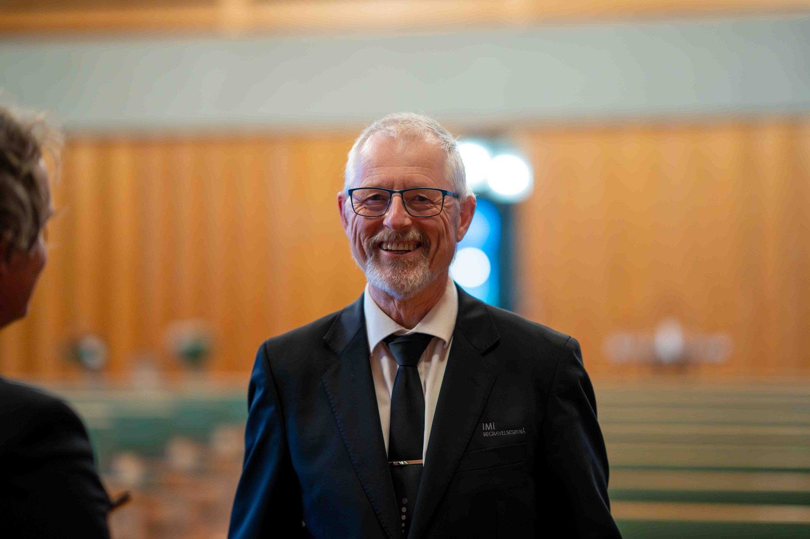
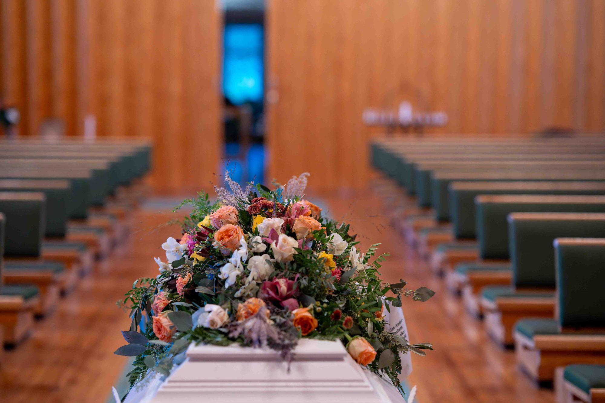
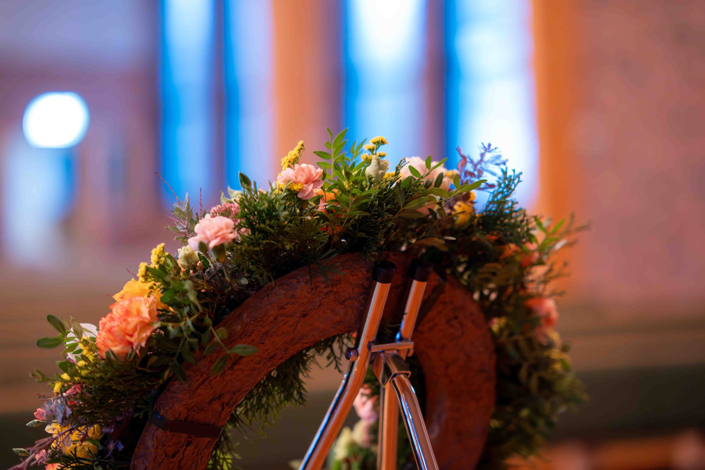
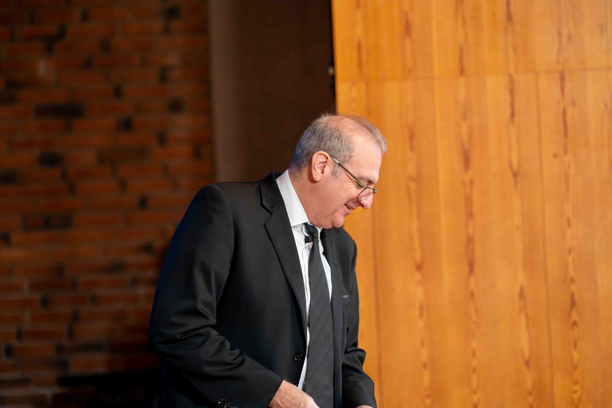
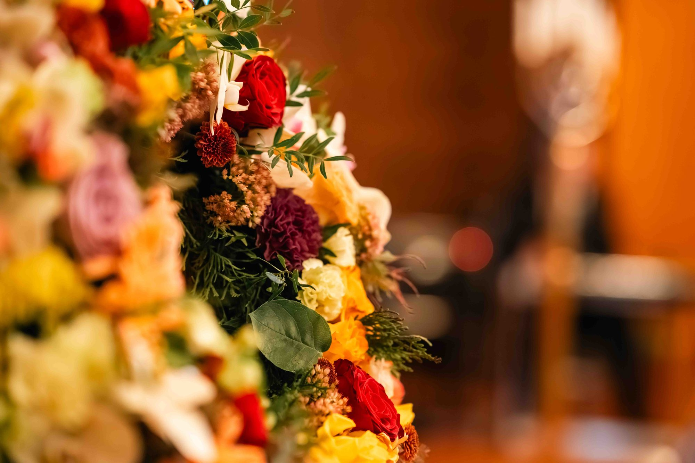
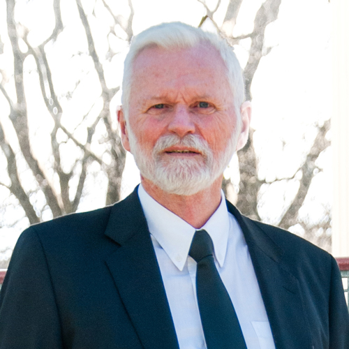
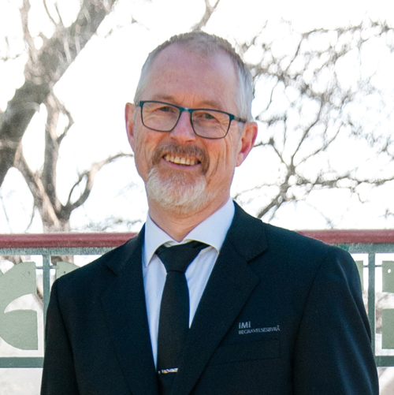
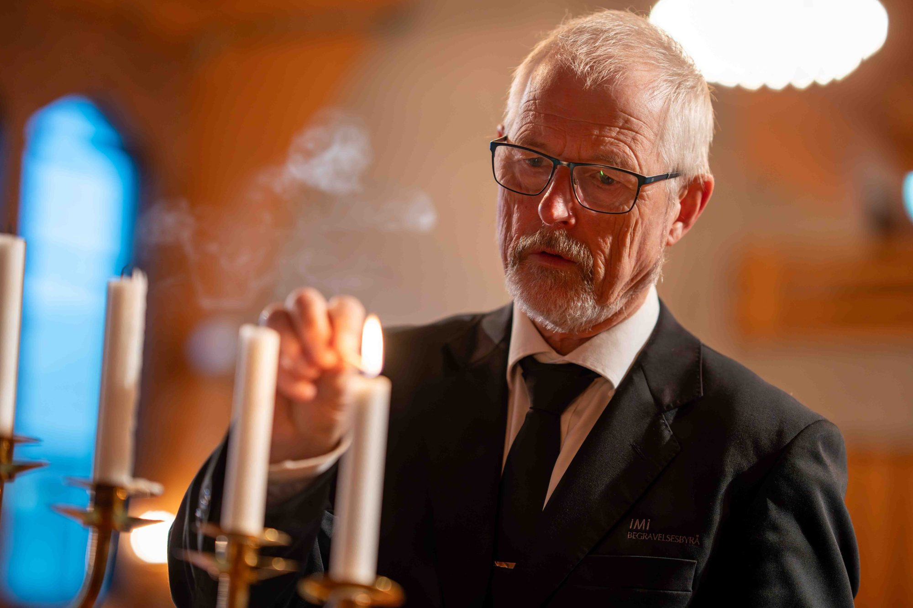

Første samtale hos oss, i Tysvær eller hjemme hos dereIngen tillegg for samtale hjemme eller utenfor arbeidstid — syning og båreandakt er inkludert i prisene


Det hjelper å møte noen som har tid, ro og erfaring når mye kjennes tungt.
Vaktelefonen 52 70 19 70 er åpen hele døgnet. Når noe haster, eller dere bare ønsker å snakke med noen med en gang, er telefonen ofte den enkleste veien inn.
Om dere ønsker å møtes hjemme, gjør vi det uten ekstra kostnad. For mange oppleves det som den tryggeste starten. Dere kan også møte oss i Haugesund eller i Tysvær.
Vi forklarer hva som påvirker kostnaden, hvilke valg som finnes og hvordan stønad fra NAV kan være aktuelt. Dere kan alltid få et personlig pristilbud ut fra ønskene deres.
Mange har satt pris på kapellet vårt når de ønsker en roligere ramme for avskjed enn i et offentlig kapell eller bårehus. Her har vi også utstilling av kister, urner og gravsteiner.
Ring når som helst, eller legg igjen nummeret deres, så tar vi kontakt. Vi møter dere i Haugesund, i Tysvær eller hjemme hos dere, slik det kjennes best.
Be oss ringe degVi tar kontaktVil du heller ringe? Vaktelefon 52 70 19 70, hele døgnet.

Praktisk hjelp, rolige samtaler og verdige valg rundt begravelse og bisettelse, i Haugesund, Tysvær og resten av Haugalandet.
Vi hjelper med det praktiske fra første stund, svarer på spørsmål og skaper litt mer ro i en tid som ofte føles tung og uoversiktlig. Dere kan ringe oss når som helst.
Sammen finner vi en god ramme for begravelsen eller bisettelsen, tilpasset tro, livssyn, ønsker og hvem den avdøde var. Kirkelig, humanistisk, livssynsåpen eller muslimsk.

Blomster, kister, urner og gravsteiner, minnesider, annonser og minnemøte. Vi forklarer også hvilke støtteordninger som kan gjelde, og hjelper med søknadene.
Minnesider finner dere på imi.vareminnesider.no.
iMi Begravelsesbyrå har sine røtter i Indremisjonens sykepleie, som startet arbeidet sitt blant syke og trengende i Haugesund i 1901. I 1963 ble begravelsesbyrået etablert som egen virksomhet.


Ta kontakt med oss når dere er klare. Vi hjelper med det praktiske, forklarer hva som skjer videre og finner en rolig vei gjennom de første valgene sammen med dere. Vaktelefonen 52 70 19 70 er åpen hele døgnet.
Ja. Vi kommer gjerne hjem til familien uten ekstra kostnad dersom det oppleves som den tryggeste og roligste starten. Dere kan også møte oss på kontoret i Strandgata i Haugesund eller på besøkskontoret i Tysvær.
Ved begravelse settes kisten i jorden etter seremonien. Ved bisettelse blir avdøde kremert, og urnen settes senere ned på gravstedet. Selve seremonien kan ellers oppleves ganske lik for familien.
En rolig stund der familie og nære kan ta avskjed etter at den døde er lagt i kiste. Den kan holdes på sykehjem, sykehus eller i vårt eget kapell i Strandgata. Syning og båreandakt er inkludert i prisene.
Prisen varierer etter ønsker og omfang, og dere kan alltid få et personlig pristilbud. Det er ikke tillegg for samtale hjemme hos familien eller utenfor ordinær arbeidstid. Gravferdsstønad fra NAV er behovsprøvd, og det kan også være aktuelt med støtte til båretransport. Vi hjelper gjerne med søknadene.
Hovedkontoret ligger i Strandgata 196 i Haugesund, med kapell og utstilling av kister, urner og gravsteiner. Besøkskontoret i Tysvær ligger i Grindevegen 87 på Stemnestaden, 5570 Aksdal. Gode parkeringsmuligheter begge steder.
Dere kan møte oss i Haugesund eller Tysvær, eller be oss komme hjem til dere dersom det kjennes best. Vaktelefonen er åpen hele døgnet.
